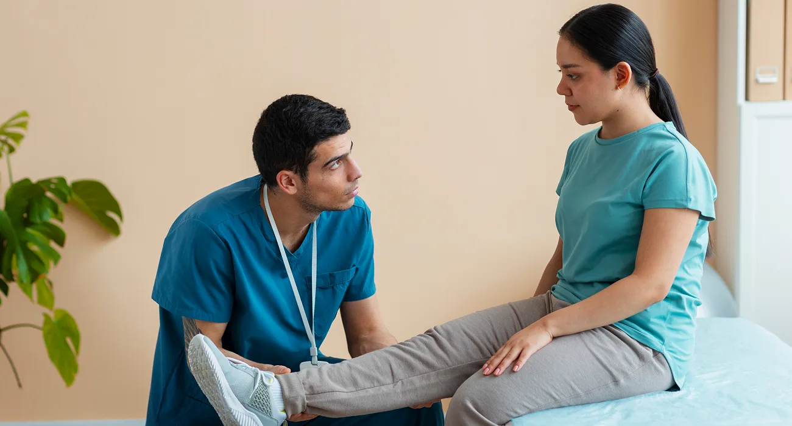

About Us
Care that starts with listening, assessing and explaining.

Justin Barr, Osteo+
A practical Thames Ditton clinic for pain, posture and movement.
Justin Barr is the owner of Osteo+. The clinic is based on osteopathic principles, careful assessment and treatment that is adapted to the person in front of us.
Appointments may include spinal manipulative therapy, muscle energy technique, acupuncture, ultrasound, shortwave diathermy and other electrotherapy approaches where suitable.
Consultation
Talk through symptoms, health history, goals and any concerns before assessment begins.
Assessment
Review movement, posture and relevant joints or muscles to guide the treatment approach.
Treatment
Use appropriate hands-on care, practical advice and exercises to support recovery.